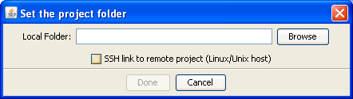

|  |
Setting the project foldersHit the Browse button to select a local project folder. If running gPLINK in local mode, this will typically be the folder where the genotype and phenotype files already reside. If running in remote mode, this local folder can be an empty folder -- it is just used to store temporary files.Previous | Next |